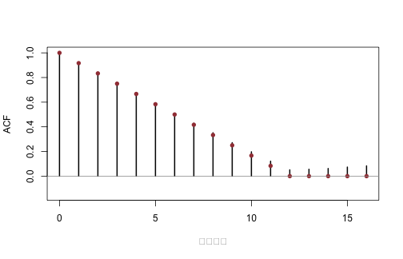

《財務時間序列分析》線上附錄
R04：AR、MA 與 ARMA 模擬
本附錄對應第 4--6 章。以固定種子模擬 AR(1)、MA(1) 與 ARMA(1,1)，把已知參數、理論 ACF、樣本 ACF、特徵根與衝擊反應放在同一處核對。最後用重疊十二期報酬展示機械性 MA(11) 相依。
knitr::opts_chunk$set(
echo = TRUE, message = FALSE, warning = FALSE,
fig.width = 7, fig.height = 4.5
)
set.seed(20260716)
三個資料生成過程#
為降低初始值影響，arima.sim 會自動使用前置模擬。所有序列平均數設為零、創新標準差設為 1。
n <- 1200L
phi <- 0.70
theta <- 0.60
phi_arma <- 0.50
theta_arma <- 0.40
ar1 <- as.numeric(arima.sim(
model = list(ar = phi), n = n, sd = 1
))
ma1 <- as.numeric(arima.sim(
model = list(ma = theta), n = n, sd = 1
))
arma11 <- as.numeric(arima.sim(
model = list(ar = phi_arma, ma = theta_arma), n = n, sd = 1
))
summary_table <- rbind(
AR1 = c(mean = mean(ar1), variance = var(ar1)),
MA1 = c(mean = mean(ma1), variance = var(ma1)),
ARMA11 = c(mean = mean(arma11), variance = var(arma11))
)
round(summary_table, 3)
## mean variance
## AR1 -0.024 2.066
## MA1 0.128 1.341
## ARMA11 0.036 2.049
理論上 AR(1) 變異數是 \(1/(1-\phi^2)\)，MA(1) 是 \(1+\theta^2\)，ARMA(1,1) 是 \[ 1+\frac{(\phi+\theta)^2}{1-\phi^2}. \]
c(
AR1 = 1 / (1 - phi^2),
MA1 = 1 + theta^2,
ARMA11 = 1 + (phi_arma + theta_arma)^2 / (1 - phi_arma^2)
)
## AR1 MA1 ARMA11
## 1.960784 1.360000 2.080000
時間圖與平均數回復#
matplot(
1:200,
cbind(ar1[1:200], ma1[1:200], arma11[1:200]),
type = "l", lty = 1, lwd = 1,
col = c("#173B57", "#A34045", "#1D6D73"),
xlab = "期數", ylab = "數值"
)
legend(
"topright", c("AR(1)", "MA(1)", "ARMA(1,1)"),
col = c("#173B57", "#A34045", "#1D6D73"),
lty = 1, bty = "n"
)

AR(1) 的條件平均路徑由 \(\phi^h x_0\) 給出。它是預期路徑，不代表每次模擬都會平滑回到零。
h <- 0:20
initial_deviation <- 3
mean_path <- initial_deviation * phi^h
data.frame(horizon = h, conditional_mean_deviation = mean_path)
## horizon conditional_mean_deviation
## 1 0 3.000000000
## 2 1 2.100000000
## 3 2 1.470000000
## 4 3 1.029000000
## 5 4 0.720300000
## 6 5 0.504210000
## 7 6 0.352947000
## 8 7 0.247062900
## 9 8 0.172944030
## 10 9 0.121060821
## 11 10 0.084742575
## 12 11 0.059319802
## 13 12 0.041523862
## 14 13 0.029066703
## 15 14 0.020346692
## 16 15 0.014242685
## 17 16 0.009969879
## 18 17 0.006978915
## 19 18 0.004885241
## 20 19 0.003419669
## 21 20 0.002393768
理論 ACF 對照樣本 ACF#
lag_max <- 20L
series_list <- list(AR1 = ar1, MA1 = ma1, ARMA11 = arma11)
theory_list <- list(
AR1 = ARMAacf(ar = phi, lag.max = lag_max),
MA1 = ARMAacf(ma = theta, lag.max = lag_max),
ARMA11 = ARMAacf(
ar = phi_arma, ma = theta_arma, lag.max = lag_max
)
)
par(mfrow = c(1, 3))
for (nm in names(series_list)) {
sample_acf <- acf(
series_list[[nm]], lag.max = lag_max,
plot = FALSE
)$acf[, , 1]
plot(
0:lag_max, sample_acf, type = "h", lwd = 2,
ylim = c(-0.25, 1), xlab = "落後階數",
ylab = "ACF", main = nm
)
points(0:lag_max, theory_list[[nm]], pch = 16, col = "#A34045")
abline(h = 0, col = "gray60")
}

par(mfrow = c(1, 1))
MA(1) 的母體 ACF 在一階後為零；圖上後續樣本柱形仍會因抽樣誤差偏離零。AR 與 ARMA 的 ACF 則通常拖尾。
定態根與可逆根#
ar_root <- polyroot(c(1, -phi))
ma_root <- polyroot(c(1, theta))
arma_ar_root <- polyroot(c(1, -phi_arma))
arma_ma_root <- polyroot(c(1, theta_arma))
root_table <- data.frame(
model_part = c("AR(1) AR", "MA(1) MA", "ARMA AR", "ARMA MA"),
real = Re(c(ar_root, ma_root, arma_ar_root, arma_ma_root)),
imaginary = Im(c(ar_root, ma_root, arma_ar_root, arma_ma_root)),
modulus = Mod(c(ar_root, ma_root, arma_ar_root, arma_ma_root))
)
root_table
## model_part real imaginary modulus
## 1 AR(1) AR 1.428571 0 1.428571
## 2 MA(1) MA -1.666667 0 1.666667
## 3 ARMA AR 2.000000 0 2.000000
## 4 ARMA MA -2.500000 0 2.500000
stopifnot(all(root_table$modulus > 1))
AR 根在單位圓外對應因果定態表示；MA 根在單位圓外對應可逆表示。兩者必須分開檢查。
ARMA(1,1) 的衝擊反應#
依課文，\(\psi_0=1\)，且 \(j\geq1\) 時 \(\psi_j=(\phi+\theta)\phi^{j-1}\)。
j <- 0:12
psi_manual <- c(
1,
(phi_arma + theta_arma) * phi_arma^(0:11)
)
psi_r <- ARMAtoMA(
ar = phi_arma, ma = theta_arma, lag.max = 12
)
psi_r <- c(1, psi_r)
data.frame(j, manual = psi_manual, R = psi_r)
## j manual R
## 1 0 1.0000000000 1.0000000000
## 2 1 0.9000000000 0.9000000000
## 3 2 0.4500000000 0.4500000000
## 4 3 0.2250000000 0.2250000000
## 5 4 0.1125000000 0.1125000000
## 6 5 0.0562500000 0.0562500000
## 7 6 0.0281250000 0.0281250000
## 8 7 0.0140625000 0.0140625000
## 9 8 0.0070312500 0.0070312500
## 10 9 0.0035156250 0.0035156250
## 11 10 0.0017578125 0.0017578125
## 12 11 0.0008789063 0.0008789063
## 13 12 0.0004394531 0.0004394531
stopifnot(isTRUE(all.equal(psi_manual, psi_r)))
重疊十二期報酬#
先模擬互不相關的單期報酬，再形成每期更新的十二期加總。相鄰加總共享十一個創新，因此理論 ACF 在 \(h=0,\ldots,11\) 為 \((12-h)/12\)。
set.seed(20260717)
one_period <- rnorm(2500, sd = 0.04)
overlap_12 <- as.numeric(stats::filter(
one_period, filter = rep(1, 12), sides = 1
))
overlap_12 <- overlap_12[is.finite(overlap_12)]
sample_overlap_acf <- acf(
overlap_12, lag.max = 16, plot = FALSE
)$acf[, , 1]
theory_overlap_acf <- c((12:1) / 12, rep(0, 5))
data.frame(
lag = 0:16,
sample_acf = sample_overlap_acf,
theoretical_acf = theory_overlap_acf
)
## lag sample_acf theoretical_acf
## 1 0 1.00000000 1.00000000
## 2 1 0.92320550 0.91666667
## 3 2 0.84353001 0.83333333
## 4 3 0.76179393 0.75000000
## 5 4 0.67751415 0.66666667
## 6 5 0.59333316 0.58333333
## 7 6 0.50868637 0.50000000
## 8 7 0.42843837 0.41666667
## 9 8 0.35158682 0.33333333
## 10 9 0.27114755 0.25000000
## 11 10 0.19695959 0.16666667
## 12 11 0.12104410 0.08333333
## 13 12 0.05081934 0.00000000
## 14 13 0.05569498 0.00000000
## 15 14 0.06172075 0.00000000
## 16 15 0.07309509 0.00000000
## 17 16 0.08294749 0.00000000
plot(
0:16, sample_overlap_acf, type = "h", lwd = 2,
xlab = "落後階數", ylab = "ACF", ylim = c(-0.15, 1)
)
points(0:16, theory_overlap_acf, pch = 16, col = "#A34045")
abline(h = 0, col = "gray60")

這個高度相關完全由重疊建構產生，不能解讀為原始單期報酬可預測。若把重疊報酬放進迴歸，推論也必須處理其序列相依。
模擬檢核#
- 增加樣本長度後，樣本 ACF 應更接近理論 ACF。
- 把 AR 參數改成負值，ACF 會正負交替。
- 把 MA 參數改成倒數並調整創新變異，可看到相同二階動差但不可逆的表示。
- 任何參數改動後都重新檢查根，而不是只看係數是否小於 1。